These steps happen on the Nubart SYNC platform and are exactly the same no matter how you'll play your videos — BrightSign, another media player, or a browser-based system. Complete this page first.
Publishing to BrightSign? Turn to page 2 once you've completed the steps below. Using something else? See the note at the end of this page.
Your Stats tab shows usage statistics and visitor feedback once your videos are live.
If someone other than you — an AV integrator or IT technician — will handle the integration, invite them from the Employees tab and give them the "Video controller" permission.
Go to Assets and upload your videos one by one.
Go to the Video Sync tab, type a name under New Video Name, and click Create new. Then open the Video File dropdown and select the file you just uploaded.
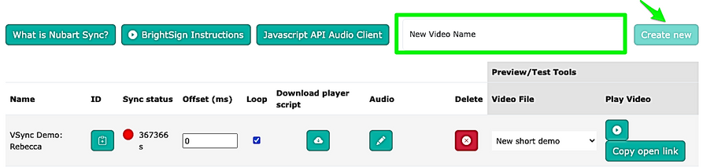
Repeat step 4 for every video you need to sync.
Before continuing, decide how the synced tracks should reach your audience.
A single QR code opens a multimedia audio guide that can combine synced tracks with other pre-recorded audio, images, or PDFs.
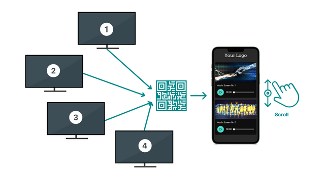
Upload all the material to Assets, and your Nubart project manager takes care of the rest.
Each screen gets its own QR code, linked only to that screen's soundtrack(s). You can set this up yourself:
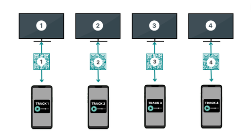
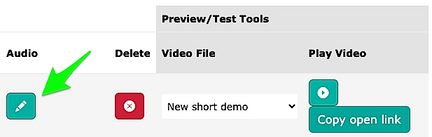
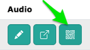
Combine both: a multimedia audio guide plus a QR code next to each screen. Ask us and we'll guide you through it.
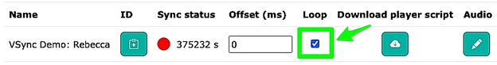
Uncheck Loop if the video should stop after playing once instead of repeating. Do this before downloading the player script, in the next step.
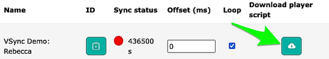
Click the download icon to get videoplayer.html. It pairs your local video file with Nubart SYNC and carries a unique token for this video instance — you'll need it for publishing.
On the Video Sync tab of our platform, the BrightSign Instructions button opens a short walkthrough video. Worth watching before you start.
You need exactly two files, placed together in one folder that contains nothing else:
video.mp4videoplayer.html file you downloaded on page 1video.mp4 and videoplayer.html — but the folder itself can be named however helps you stay organized.
Log in to BrightSign Author (BrightAuthor:connected) and select New Presentation from the dashboard.
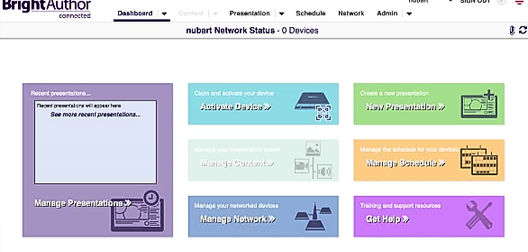
Choose template Single Zone → HTML, give the presentation a name, and select Local Content for the HTML Site.
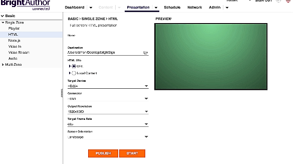
Set Target Device, Connector, Output Resolution, Target Frame Rate, and Screen Orientation to match your display, then click Start.
Back in BrightSign Author, a file browser opens — select the videoplayer.html file from the folder you prepared in step 1. Before continuing, confirm both files appear in the Contents tab.
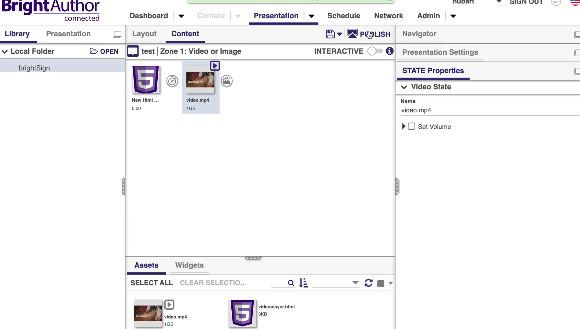
Select the video and click Publish (top right).
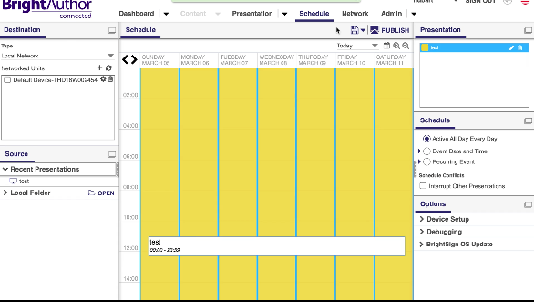
Choose the target device from your network list and click Publish again.
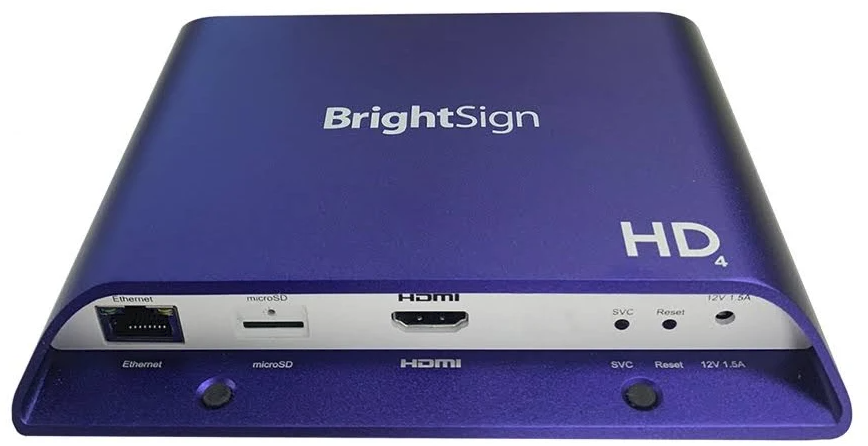
Any internet-connected BrightSign player works — for example an HD224 or similar model. BrightAuthor:connected only needs to be open when you're publishing; day-to-day, the player itself just needs to stay online.
Write to info@nubart.eu any time — before, during, or after your setup.
Once your video is playing, the traffic light in the Sync status column shows how many seconds have passed since the player last checked in with Nubart's backend. Refresh the page to update it.
🟢 Green — checking in normally, everything is working.
🔴 Red — no recent check-in.
Troubleshooting
To actively confirm Nubart SYNC is receiving your signal, test with two devices at once:
If the audio lags behind or runs ahead of the video slightly — most noticeable when someone on screen is speaking — adjust the Offset (ms) field for that video instance.
This latency comes from the display and cabling chain at each site, so it's stable once set — but it's unique to each installation and screen.
Troubleshooting
If synced audio jumps or drifts specifically on iPhones (Safari), while the same track plays fine on Android, the soundtrack's encoding is almost always the cause. It needs to be constant bitrate (CBR), 44.1 kHz, MPEG Version 1, Layer 3 — variable bitrate (a common default in tools like Audacity) is the usual culprit.
If you test with several phones side by side, don't be surprised if they're not perfectly aligned with each other — each phone's hardware, OS, and network connection behave slightly differently. This typically stays under 0.3 seconds, often less on Android.
One-time setup
Every day, on site
Troubleshooting
You may notice a very short pause each time a looping video restarts from the beginning. On BrightSign players, this is expected: the player needs to reload the video for each cycle to restart it reliably and keep the sync signal accurate — it isn't a malfunction.